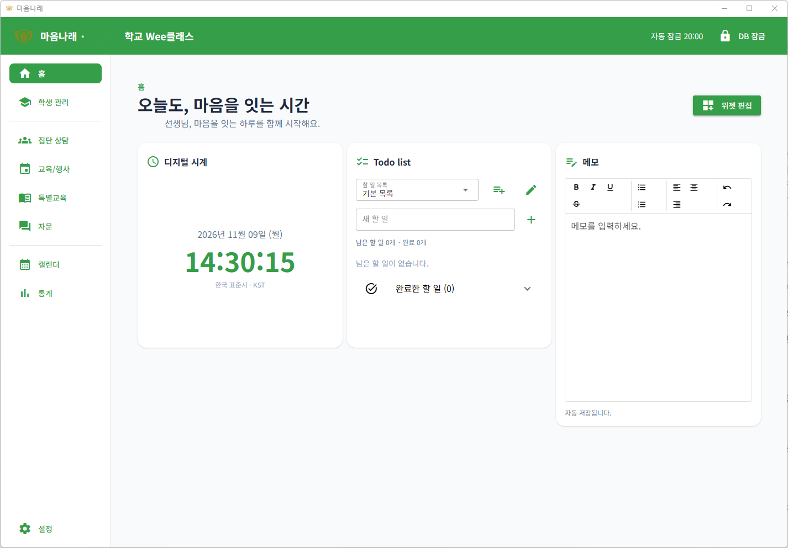
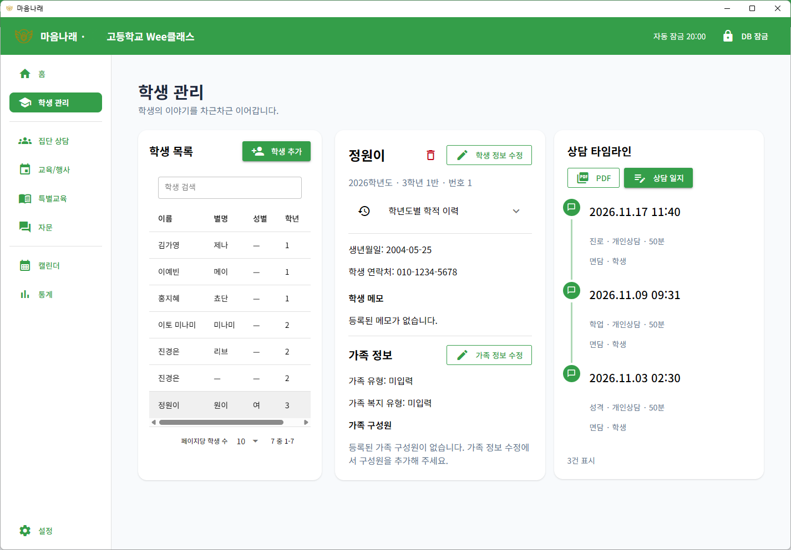
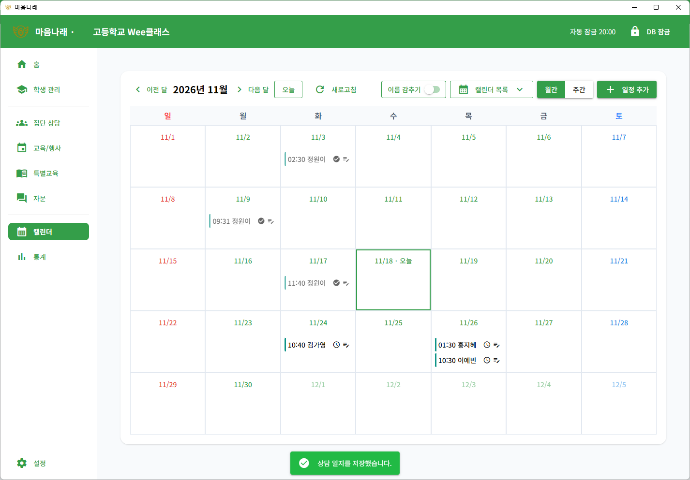

전문상담교사를 위한 상담 업무 도구
학교 상담의 기록부터
일정과 통계까지,
한곳에서


한 학생의 이야기에서
상담실의 전체 흐름까지
흩어져 있던 기록과 일정을 모아,
다음 상담에 필요한
내용을 찾아보세요.
지난 이야기를 잇는
상담 기록
학생별 상담 이력과 학적을 함께 살펴보고, 개인·집단 상담부터 교사 자문과 심리검사까지 기록하세요.
- 학생별 상담 타임라인
- 서식 있는 일지와 파일 첨부
- 특별교육, 교육·행사 일지


다가올 일정과
쌓여가는 상담 활동
월간·주간 캘린더에서 상담 일정을 확인하고, 기간별 통계로 상담 실적을 정리하세요.
- 상담 일정과 개인 일정 함께 보기
- NEIS 학사일정·구글 캘린더 연동
- 기간별 상담 실적과 통계 보고서


기존 자료도 함께 가져오세요.
학생·교사 XLSX 명부를 일괄 등록하고,
울산형
상담기록관리 XLSB 자료를 이관할 수 있습니다.
필요한 형식으로 정리하세요.
일지 PDF, NEIS 업로드용 XLSX,
내부결재용
상담대장으로 내보낼 수 있습니다.
학생의 이야기는
내 컴퓨터에 보관합니다.
상담 기록과 첨부파일을 로컬 데이터베이스에
암호화하여
저장합니다.
- 비밀번호로 여는 상담 자료
- SQLCipher 암호화 저장과 DB 잠금·자동 잠금을 지원합니다.
- 백업도 직접 관리
- 설정의 DB 메뉴에서 암호화 백업을 내려받고 복원하세요. 중요한 기록은 정기적으로 백업해 두세요.
- 필요한 정보는 인터넷으로
- 급식·날씨·학교 정보 조회, 외부 캘린더 연동과 새 버전 확인에는 인터넷 연결을 사용합니다.
처음 시작하는 날에도,
차근차근
프로그램을 설치한 뒤
우리 학교의 상담실을 준비해
보세요.
상세 사용 설명서 읽기
-
프로그램 설치
최신 릴리스의 Assets에서 설치 파일을 받으세요. Windows x64는 이름이
-setup.exe로 끝나는 파일입니다. -
학교 정보 설정
처음 실행하면 DB 비밀번호를 정하고 학교 정보와 상담교사 이름을 입력합니다.
-
학생 등록
학생을 직접 등록하거나 XLSX 명부를 가져오세요. 기존 자료 가져오기도 지원합니다.
-
첫 상담 기록
상담 일지를 작성하고 일정과 통계를 확인하세요. 설정에서 암호화 백업도 준비해 두세요.
자주 묻는 질문
무료로 사용할 수 있나요?
네. 마음나래는 MIT 라이선스로 공개된 무료 오픈소스 프로젝트입니다. 포함된 라이브러리와 글꼴에는 각각의 라이선스가 적용됩니다. 서드파티 고지 및 소스 안내에서 자세히 확인할 수 있습니다.
어떤 컴퓨터에서 사용할 수 있나요?
현재는 Windows 64bit 설치 파일만 제공합니다. 최신 릴리스의 Assets에서 제공 파일을 확인하세요. macOS 등 다른 환경에서 소스로 실행하거나 빌드하려면 저장소의 실행·빌드 안내를 참고하세요.
인터넷 없이도 기록할 수 있나요?
학생과 상담 자료는 내 컴퓨터의 로컬 DB에서 관리합니다. 급식·날씨·학교 정보 조회, 외부 캘린더 연동과 업데이트 확인 등 외부 정보를 사용하는 기능에는 인터넷 연결이 필요합니다.
기존 명부와 상담 기록을 가져올 수 있나요?
학생·교사 XLSX 명부를 일괄 등록할 수 있습니다. 울산형 상담기록관리 XLSB 자료는 설정의 기존 자료 가져오기 기능으로 이관할 수 있습니다. 다른 형식의 자료는 지원 여부를 먼저 확인해 주세요.
컴퓨터를 바꾸기 전에 무엇을 해야 하나요?
기존 컴퓨터에서 설정 → DB의 암호화 백업을 내려받아 보관하세요. 새 컴퓨터에 마음나래를 설치한 후 DB 복원 기능을 사용합니다. 백업 파일과 DB 비밀번호를 함께 준비하세요.
다음 상담을 준비하는 자리,
마음나래와
함께하세요.
설치 파일과 변경 사항은 GitHub에서 확인할 수 있습니다.